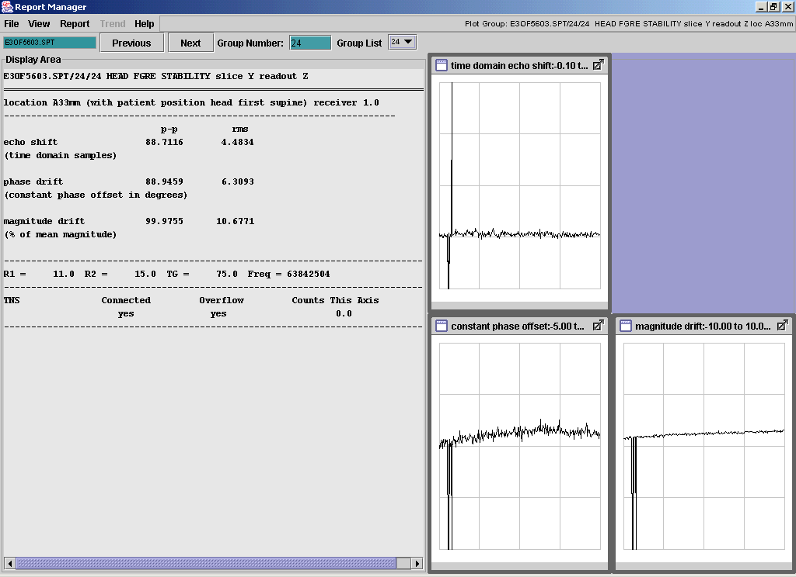
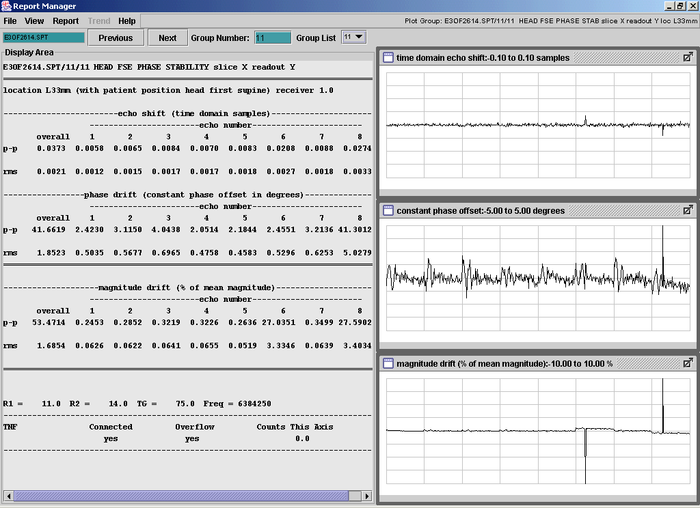
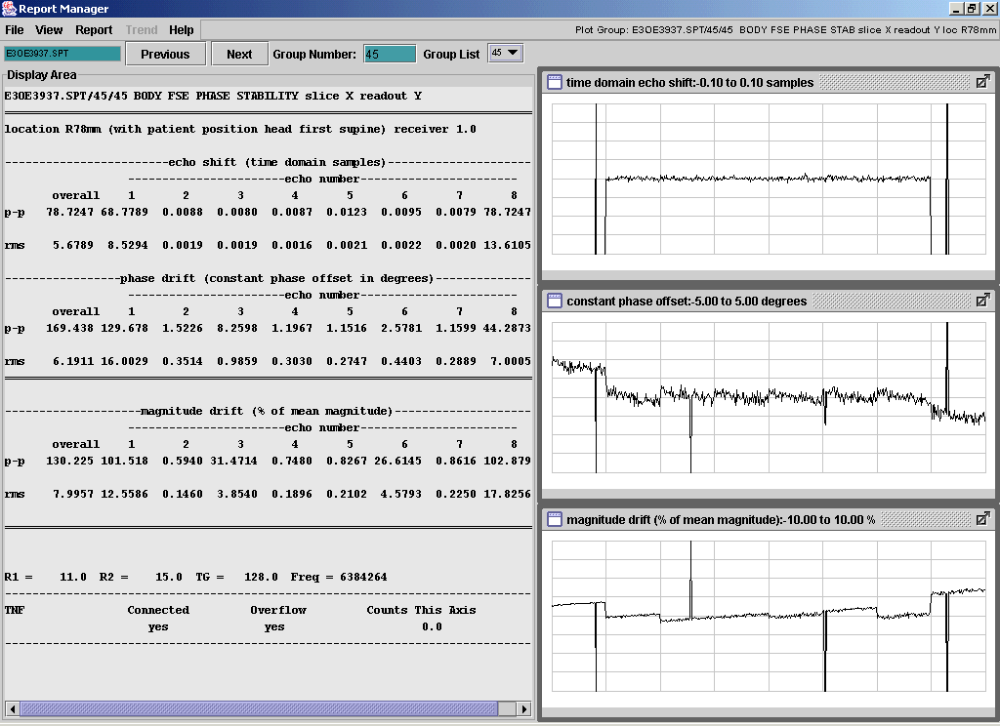
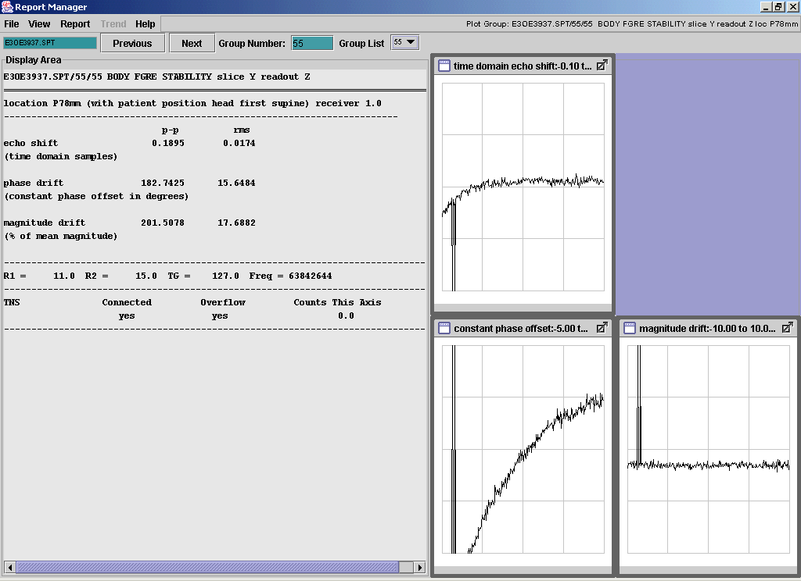
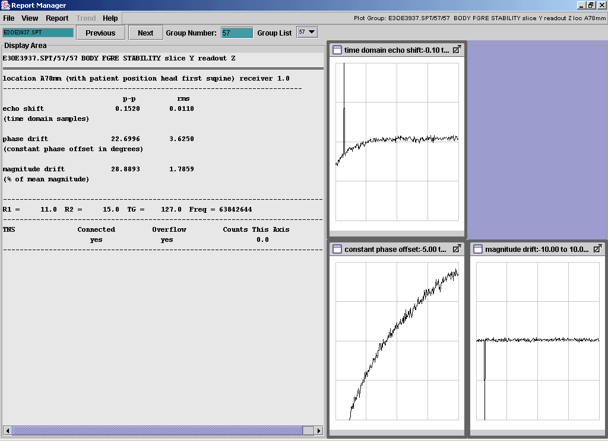

Bad AP Board Causing SPT Spikes
| Image Info: The image above was seen when troubleshooting for random spikes in SPT data. Flowchart: Symptom: The plots below are the SPT plots which, in two recent cases , indicated there was a bad AP board. Root Cause/Solution: |







